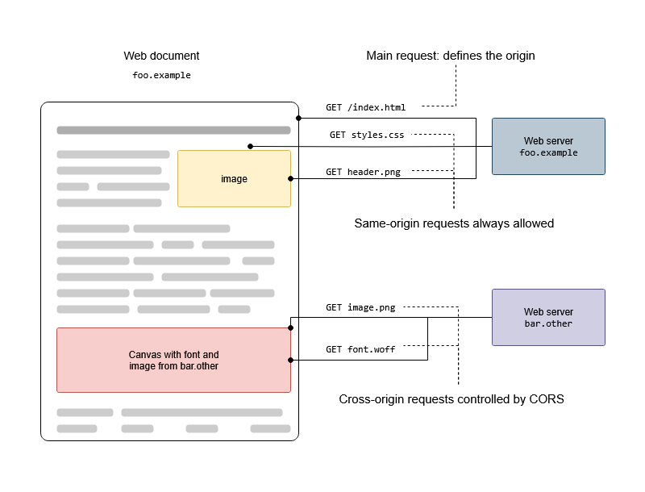

ACRON Methodology Part-13
فاز 10: Service Layer
بخش اول: درک عمیق مفهوم لایه سرویس The Why
در ساختار سنتی جنگو، توسعهدهندگان معمولاً کدهای منطق تجاری (Business Logic) را در یکی از سه جا مینویسند:
- داخل Views: باعث چاق شدن ویو (Fat View) میشود. اگر فردا بخواهی همان کار را در یک کامند مدیریتی (Management Command) یا یک ورکر پسزمینه (Celery Task) انجام دهی، مجبور به کپی کردن کدهایش هستی.
- داخل Serializers: سریالایزر فقط وظیفه اعتبارسنجی شکل داده (Validation) و تبدیل فرمت (Serialization) را دارد. گذاشتن منطقهای سنگین (مثل کسر از انبار یا تراکنش مالی) در آن، اصل Single Responsibility (تکوظیفگی) را نقض میکند.
- داخل Models: باعث چاق شدن مدل (Fat Model) میشود که خوانایی دیتابیس را پایین میآورد.
راهحل ارشد: Service Layer
لایه سرویس یک کلاس یا مجموعهای از توابع خالص پایتونی است که هیچ وابستگی به لایه نمایش (HTTP Request, API, Response) ندارد. ورودیهای خام را میگیرد، عملیات دیتابیسی و محاسباتی را انجام میدهد و خروجی را برمیگرداند.
سناریوی عملی: فرآیند پیچیده ثبت سفارش (Order Placement)
برای یادگیری این الگو، ما فرآیند ثبت سفارش را در دامنه orders ریفکتور میکنیم. این فرآیند یکی از حساسترین بخشهای کل پروژه است چون شامل چندین کار متوالی است:
- بررسی معتبر بودن سبد خرید (Cart).
- بررسی موجودی انبار برای تکتک محصولات موجود در سبد خرید.
- قفل کردن یا فریز کردن قیمت محصول در آن لحظه (چون قیمت محصول ممکن است فردا تغییر کند اما سفارش کاربر باید با قیمت زمان خرید ثبت شود).
- کم کردن موجودی انبار محصولات به صورت آنی.
- ایجاد رکورد سفارش (
Order) و اقلام سفارش (OrderItem).
- خالی کردن سبد خرید کاربر.
اگر در حین انجام قدم ۴ یا ۵ اینترنت قطع شود یا دیتابیس کرش کند چه میشود؟ اگر لایه سرویس نباشد، موجودی انبار کم شده اما سفارشی ثبت نشده است! ما در این لایه از تراکنشهای اتمیک (transaction.atomic) استفاده میکنیم تا یا همه چیز با هم انجام شود یا هیچچیز اعمال نشود (All or Nothing).
1- فایلservices.pyدر پوشهapps/orders/را تغییر کد بده:# apps/orders/services.py from django.db import transaction from rest_framework.exceptions import ValidationError from apps.carts.models import Cart from apps.orders.models import Order, OrderItem from apps.products.models import Product class OrderService: """ سرویس ارشد مدیریت و پردازش فرآیند ثبت سفارش در پروژه ACRON. این کلاس کاملاً مستقل از ویو کار میکند و منطق تجاری را ایزوله نگه میدارد. """ @classmethod def place_order(cls, user, cart_id: str, shipping_address: str) -> Order: """ متد اصلی ثبت سفارش. این متد ورودیهای لازم را گرفته و تمام مراحل را در قالب یک تراکنش اتمیک پیش میبرد. """ # استفاده از context manager برای ایجاد یک Transaction اتمیک در دیتابیس. # چرا؟ اگر هرکدام از خطوط داخل این بلوک با خطا مواجه شوند، دیتابیس به حالت اولیه # برگشت میخورد (Rollback) و هیچ دادهی ناقصی ذخیره نمیشود. with transaction.atomic(): # ۱. واکشی سبد خرید به همراه اقلام آن به صورت بهینه برای جلوگیری از مشکل N+1 Query # از select_related استفاده نمیکنیم چون رابطه با اقلام سبد خرید (CartItem) از نوع reverse foreign key است، # پس از prefetch_related استفاده میکنیم تا اقلام را یکبار برای همیشه لود کنیم. try: cart = Cart.objects.prefetch_related('items__product').get(id=cart_id, is_active=True) except Cart.DoesNotExist: raise ValidationError("سبد خرید معتبری یافت نشد یا این سبد خرید قبلاً منقضی شده است.") # ۲. بررسی اینکه آیا سبد خرید اصلاً قلم کالا دارد یا خیر cart_items = cart.items.all() if not cart_items: raise ValidationError("سبد خرید شما خالی است و امکان ثبت سفارش وجود ندارد.") # ۳. محاسبه کل مبلغ سفارش و بررسی موجودی انبار به صورت یکجا total_price = 0 for item in cart_items: product = item.product # بررسی موجودی انبار: آیا موجودی محصول کمتر از تعداد درخواستی کاربر است؟ if product.stock < item.quantity: raise ValidationError( f"موجودی کالا '{product.name}' کافی نیست. موجودی فعلی: {product.stock}" ) # محاسبه قیمت: تعداد ضربدر قیمت فعلی محصول total_price += product.price * item.quantity # ۴. ایجاد رکورد اصلی سفارش در دیتابیس # در این مرحله سفارش در حالت 'PENDING' (در انتظار پرداخت) ایجاد میشود. order = Order.objects.create( user=user, total_price=total_price, shipping_address=shipping_address, status='PENDING' # مقدار پیشفرض که نشان میدهد فرآیند پرداخت هنوز تکمیل نشده ) # ۵. انتقال اقلام از سبد خرید به اقلام سفارش + فریز کردن قیمتها + کسر از انبار for item in cart_items: product = item.product # فریز کردن قیمت: قیمت فعلی محصول را مستقیماً در جدول OrderItem ذخیره میکنیم. # چرا؟ اگر فردا قیمت محصول تغییر کرد، فاکتور کاربر نباید دستخوش تغییر شود. OrderItem.objects.create( order=order, product=product, quantity=item.quantity, price=product.price # قیمت فریز شده کالا در لحظه خرید ) # کسر از انبار: موجودی محصول را به تعداد خریداری شده کاهش میدهیم product.stock -= item.quantity # ذخیره تغییرات محصول در دیتابیس (فقط فیلد stock را آپدیت میکنیم تا پرفورمنس بالاتر برود) product.save(update_fields=['stock']) # ۶. غیرفعال کردن سبد خرید (کاربر کارش با این سبد خرید تمام شده است) cart.is_active = False cart.save(update_fields=['is_active']) # خروجی متد: شیء سفارشِ ساخته شده را برمیگردانیم تا لایههای بالاتر از آن استفاده کنند return order
2- حالا که قلب منطق تجاری ما به لایه سرویس منتقل شد، بیایید فایلapps/orders/views.pyرا بازنویسی کنیم. ویوی ما تمیز، خوانا و کوتاه (Thin View) میشود. وظیفه این ویو اکنون فقط گرفتن کلاینت درخواست و فرستادن آن به سرویس است.# apps/orders/views.py from rest_framework import viewsets, status from rest_framework.response import Response from rest_framework.permissions import IsAuthenticated from .models import Order from .serializers import OrderSerializer, OrderCreateInputSerializer from .services import OrderService class OrderViewSet(viewsets.ModelViewSet): """ کنترلر (View) مدیریت سفارشات. با رعایت معماری تمیز، این ویو فاقد هرگونه منطق تجاری سنگین دیتابیسی است. """ permission_classes = [IsAuthenticated] # فقط کاربران لاگین شده به سفارشات دسترسی دارند serializer_class = OrderSerializer def get_queryset(self): """ برگرداندن لیست سفارشات متعلق به خود کاربر لاگین شده به ترتیب جدیدترینها. """ return Order.objects.filter(user=self.request.user).order_by('-created_at') def create(self, request, *args, **kwargs): """ اکشن ساخت سفارش (POST /api/orders/) """ # ۱. اعتبارسنجی ورودیهای خام (شناسه سبد خرید و آدرس ارسال) با استفاده از سریالایزر اختصاصی ورودی input_serializer = OrderCreateInputSerializer(data=request.data) input_serializer.is_valid(raise_exception=True) # استخراج دادههای تایید شده از سریالایزر cart_id = input_serializer.validated_data['cart_id'] shipping_address = input_serializer.validated_data['shipping_address'] # ۲. ارجاع کار به لایه سرویس (قلب تپنده منطق تجاری) # تمام فرآیندهای سنگین اتمیک، کسر انبار و فریز قیمت در اینجا و خارج از دید کنترلر رخ میدهد. order = OrderService.place_order( user=request.user, cart_id=cart_id, shipping_address=shipping_address ) # ۳. آمادهسازی خروجی استاندارد JSON با استفاده از سریالایزر اصلی سفارش output_serializer = self.get_serializer(order) # برگرداندن پاسخ نهایی با وضعیت 201 Created به کلاینت return Response(output_serializer.data, status=status.HTTP_201_CREATED)
3- برای اینکه مطمئن شویم دادههای ورودی به ویو دقیقاً همان چیزی هستند که ما نیاز داریم، سریالایزر مخصوص ورودی ثبت سفارش را در فایل
apps/orders/serializers.pyباز تعریف میکنیم:# apps/orders/serializers.py from rest_framework import serializers from .models import Order, OrderItem class OrderCreateInputSerializer(serializers.Serializer): """ سریالایزر اختصاصی برای ولیدیشن و دریافت اطلاعات اولیه ثبت سفارش از سمت فرانتاند. این سریالایزر فاقد متد create یا update داخلی است، زیرا این وظایف به لایه سرویس منتقل شدهاند. """ cart_id = serializers.UUIDField(required=True, error_messages={'required': 'ارسال شناسه سبد خرید الزامی است.'}) shipping_address = serializers.CharField(required=True, min_length=10, error_messages={'required': 'آدرس ارسال نمیتواند خالی باشد.'}) class OrderItemSerializer(serializers.ModelSerializer): """ سریالایزر نمایش جزییات هر قلم کالا در فاکتور نهایی سفارش. """ product_name = serializers.CharField(source='product.name', read_only=True) class Meta: model = OrderItem fields = ['id', 'product_name', 'quantity', 'price'] class OrderSerializer(serializers.ModelSerializer): """ سریالایزر اصلی برای خروجی دادن جزییات کامل یک سفارش به همراه اقلام تو در توی آن. """ items = OrderItemSerializer(many=True, read_only=True) # نمایش اقلام سفارش به صورت Nested class Meta: model = Order fields = ['id', 'total_price', 'shipping_address', 'status', 'items', 'created_at']
ببینیم چه استانداردهای جهانی عظیمی را در این چند خط کد پیاده کردیم:
- جداسازی کامل دغدغهها (Separation of Concerns): ویو فقط با شبکه و درخواستهای HTTP سر و کار دارد. سریالایزر فقط با اعتبارسنجی فرمت دادهها سر و کار دارد. سرویس فقط با قواعد بیزینس و قوانین دیتابیس سر و کار دارد.
- امنیت دیتابیس با
transaction.atomic: اگر در لایه سرویس، انبار محصول اول با موفقیت کم شود اما محصول دوم موجودی نداشته باشد و خطا رخ دهد، دیتابیس کل فرآیند را لغو میکند. محصول اول دوباره به انبار برمیگردد و هیچ فاکتور ناقصی صادر نمیشود. این یعنی پایداری ۱۰۰ درصدی سیستم مالی سوپراپلیکیشن acron.
- جلوگیری از تغییرات ناخواسته داده (Immutability): با انتقال قیمت کالا به جدول
OrderItemدر لایه سرویس، فاکتور کاربر را برای همیشه فریز کردیم. تغییر قیمت محصول در بخش مدیریت، فاکتورهای صادر شدهی قبلی را خراب نخواهد کرد.
- قابلیت تستنویسی فوقالعاده (Unit Testing): حالا تو میتوانی بدون اینکه نیاز باشد یک درخواست فیک HTTP با کتابخانههای تست جنگو بسازی، مستقیماً متد
OrderPlacementService.place_orderرا در تستهای خود صدا بزنی، به آن دیتای فیک بدهی و خروجی دیتابیس را ارزیابی کنی. این همان چیزی است که شرکتهای بزرگ در سطح جهان به دنبال آن هستند.
فاز 11: Frontend - Presentation Layer
چرا ترکیب React + Vite فرانتاندی؟
. آیندهی چت گفتگو (WebSockets)
وقتی زمان راهاندازی چت برسد، فرانتاند باید بتواند یک کانکشن دائمی و زنده با بکاند نگه دارد. React به دلیل داشتن مفهومی به نام useEffect (مدیریت چرخهی حیات کامپوننتها)، اتصال به WebSocketها را بسیار تمیز و در قالب چند خط کد مدیریت میکند. پکیجهای آمادهی فوقالعادهای هم در React برای رندر کردن چتباکسها وجود دارد که کار را برایت بسیار ساده میکنند.
۲. آیندهی بخش اکسپلور (Explore)
بخش اکسپلور معمولاً نیاز به اسکرول بیپایان (Infinite Scroll)، لود شدن متحرک کارتها (Skeleton Loaders) و فیلترهای آنی دارد. کامپوننتمحور بودن React به تو اجازه میدهد یک بار کارتِ محصول یا پست را طراحی کنی و آن را به راحتی در کل ساختار اکسپلور به صورت داینامیک تکثیر کنی، بدون اینکه کدت کثیف شود.
۳. چرا پیچیده نیست؟ (حذف غولهای Next.js یا Nuxt.js)
ما به سراغ Next.js نمیرویم. Next.js مفاهیم پیچیدهای مثل رندرینگ سمت سرور (SSR) دارد که یادگیریاش طولانی است. ما از Vite استفاده میکنیم. لودر بسیار سبکی که در عرض ۳ ثانیه یک پروژه مدرن React با زبان JavaScript یا TypeScript به تو تحویل میدهد که ساختارش بسیار شفاف و سرراست است.
🏛️ ساختار درختی فرانتاند (سازگار با دامنههای بکاند)
پوشه frontend/ پروژه شما را به این صورت مهندسی میکنیم تا دقیقاً با اپهای بکاند (accounts, products, carts, orders) هماهنگ باشد:
frontend/
├── public/
├── src/
│ ├── assets/ # تصاویر، فونتها و استایلهای عمومی
│ ├── components/ # کامپوننتهای مشترک جهانی (Button, Input, Loader)
│ ├── config/ # تنظیمات اصلی (آدرس API، متغیرهای محیطی)
│ ├── context/ # مدیریت وضعیتهای سراسری (مانند AuthContext برای توکنها)
│ ├── hooks/ # هوکهای سفارشی و عمومی پروژه (useFetch, useDebounce)
│ │
│ ├── services/ # 🧠 لایه ارتباط با دیتابیس/سرور (مغز ارتباطی)
│ │ ├── apiClient.js # اینستنس Axios به همراه Interceptorها برای مدیریت JWT
│ │ └── authService.js # متدهای مربوط به Login, Refresh Token و Me
│ │
│ ├── features/ # 📦 دامنههای تجاری (دقیقاً آینه اپهای جنگو)
│ │ ├── auth/ # مدیریت ورود و حساب کاربری (accounts)
│ │ ├── products/ # کاتالوگ و جزئیات محصولات (products)
│ │ ├── carts/ # سبد خرید و محاسبات مبالغ (carts)
│ │ └── orders/ # ثبت سفارش و پیگیری مالی (orders & payments)
│ │
│ ├── routes/ # مدیریت مسیرها و دیوارهای امنیتی (Protected Routes)
│ ├── App.jsx
│ └── main.jsx
├── package.json
└── vite.config.js # استفاده از ابزار مدرن Vite به جای CRA1- راهاندازی لایه سرویس (API Client)
در اولین قدم، ابزاری مثل Axios را برای مدیریت درخواستها راهاندازی میکنیم. با توجه به اینکه در بکاند از djangorestframework-simplejwt استفاده شده است، فرانتاند باید بتواند بهصورت خودکار توکنهای منقضی شده را نوسازی کند.
• یک Axios Interceptor مینویسیم که هرگاه سرور خطای 401 Unauthorized برگرداند، به آدرس /api/token/refresh/ درخواست بفرستد، توکن جدید را بگیرد و درخواست کاربر را بدون اینکه خودش متوجه شود، مجدداً ارسال کند.
2- آینهسازی دامنهها (Domain Mapping)
در پوشه features/ برای هر اپلیکیشن جنگو یک ماژول فرانتایندی میسازیم:
• بکاند apps/carts/ $\rightarrow$ فرانتاند features/carts/: شامل کامپوننتهای نمایش آیتمهای سبد، دکمههای کم و زیاد کردن تعداد (PATCH به /api/cart-items/) و نمایش جمع کل مبلغ (grand_total).
• بکاند apps/products/ $\rightarrow$ فرانتاند features/products/: شامل کارتهای محصول، فیلتر دستهبندیها و بهینهسازی لود تصاویر محصول.
3- مدیریت وضعیت احراز هویت (Auth Context)
از یک Context در React برای نگهداری وضعیت کاربر فعلی (آیا لاگین هست یا خیر؟) استفاده میکنیم. به محض لود شدن کامپوننت اصلی، درخواستی به ابزار محافظتشده /api/me/ ارسال میشود تا اطلاعات هویتی کاربر (مثل نام و ایمیل) در فرانتاند کش و آماده استفاده شود.
📄 ۱. تنظیم فایل .gitignore برای فرانتاند
1- یک فایل به نام.gitignoreدر داخل پوشهfrontend/ایجاد کنید و محتویات زیر را در آن قرار دهید تا فایلهای حجیم و خروجیهای ساخت (Build Outputs) کاملاً توسط گیت نادیده گرفته شوند:# Dependency directories (پوشه پکیجها - معادل محیط مجازی در بکاند) node_modules/ jspm_packages/ web_modules/ # Build outputs (فایلهای کامپایل شده نهایی که بسیار حجیم هستند) dist/ dist-ssr/ build/ out/ # Logs (لوگهای خطا و پروسسها) npm-debug.log* yarn-debug.log* yarn-error.log* pnpm-debug.log* *.log # Local env files (فایلهای تنظیمات محلی و کلیدهای امنیتی) .env .env.local .env.development.local .env.test.local .env.production.local # Editor directories and files (تنظیمات شخصی ادیتورها) .vscode/ .idea/ *.suo *.ntvs* *.njsproj *.sln *.sw?
از این به بعد، فرآیند توسعه شما و بقیه اعضای تیم به این صورت خواهد بود:
- اضافه کردن پکیج جدید: وقتی دستور
npm install axiosرا میزنید، پکیج به صورت محلی درnode_modulesدانلود میشود اما گیت فقط تغییرات متنیِ چند بایتی را درpackage.jsonثبت میکند.
- کلون کردن پروژه از گیتهاب: وقتی پروژه را روی سیستم دیگری کلون میکنید، پوشه
node_modulesوجود ندارد. کافیست در پوشه فرانتاند دستور زیر را بزنید تا کل فرانتاند بر اساس فرمولpackage.jsonدر چند ثانیه بازسازی شود:
ویندوز (Windows): کافیست به سایت رسمی nodejs.org بروید و نسخه LTS را دانلود و نصب کنید.
تست و تایید نهایی
پس از انجام یکی از مراحل بالا، ترمینال خود را ریاستارت کنید و دستورات زیر را برای اطمینان از نصب صحیح وارد کنید:
node -v
npm -v🌐 ۳. انتقال آدرس API به فایل محیطی (امنیت و انعطاف)
2- برای اینکه آدرس IP یا دامنهی بکاند (مثل[http://127.0.0.1:8000](http://127.0.0.1:8000)) در کدهای گیتهاب هاردکد (Hardcode) نشود و حجم فایلها یا ردپای امنیتی ایجاد نکند، یک فایل به نام.envدر ریشه فرانتاند بسازید:VITE_API_BASE_URL=http://127.0.0.1:8000/api
یک فایل در مسیر src/services/apiClient.js ایجاد کنید. این فایل مغز متفکر ارتباطات فرانتاند با اِندپوینتهای سرور شما خواهد بود و وظایف زیر را به صورت خودکار انجام میدهد:
- تزریق خودکار
Access Tokenبه هدر تمام درخواستهای نیازمند احراز هویت.
- شکار خطاهای
401 Unauthorizedو اقدام خودکار برای تمدید توکن از طریق/api/token/refresh/.
- تلاش مجدد برای ارسال درخواست اصلی کاربر پس از تمدید موفقیتآمیز توکن، بدون اینکه کاربر متوجه وقفهای شود.
3- یک فایل در مسیرfrontend/src/services/apiClient.jsایجاد کنید. کد زیر را داخل بگذارید:import axios from 'axios'; // تعریف آدرس پایه API (میتواند از فایل .env خوانده شود) const API_BASE_URL = import.meta.env.VITE_API_BASE_URL || 'http://127.0.0.1:8000/api'; // ایجاد یک اینستنس اختصاصی از اکسیدوس برای درخواستهای عمومی و احراز هویت شده const apiClient = axios.create({ baseURL: API_BASE_URL, headers: { 'Content-Type': 'application/json', }, }); // ---------------------------------------------------------------- // ۱. Request Interceptor: تزریق توکن به هدر درخواستها // ---------------------------------------------------------------- apiClient.interceptors.request.use( (config) => { const accessToken = localStorage.getItem('access_token'); // اگر توکن در حافظه مرورگر موجود بود، آن را به هدر Authorization اضافه کن if (accessToken && !config.headers['Authorization']) { config.headers['Authorization'] = `Bearer ${accessToken}`; } return config; }, (error) => { return Promise.reject(error); } ); // ---------------------------------------------------------------- // ۲. Response Interceptor: مدیریت خطای 401 و تمدید خودکار توکن // ---------------------------------------------------------------- apiClient.interceptors.response.use( (response) => response, // اگر پاسخ موفقیتآمیز بود، بدون تغییر آن را پاس بده async (error) => { const originalRequest = error.config; // بررسی اینکه آیا خطا مربوط به انقضای توکن (401) است و آیا قبلاً این درخواست را مجدد تلاش نکردهایم؟ if (error.response?.status === 401 && !originalRequest._retry) { originalRequest._retry = true; // علامتگذاری درخواست برای جلوگیری از حلقه بینهایت const refreshToken = localStorage.getItem('refresh_token'); // اگر رفرش توکن وجود نداشت، کاربر باید مجدداً لاگین کند if (!refreshToken) { handleLogout(); return Promise.reject(error); } try { // ارسال درخواست تمدید توکن به اِندپوینت بکاند // نکته مهم: از خود apiClient استفاده نمیکنیم تا وارد اینترسپتور قبلی نشود const response = await axios.post(`${API_BASE_URL}/token/refresh/`, { refresh: refreshToken, }); const newAccessToken = response.data.access; // ذخیره توکن دسترسی جدید در مرورگر localStorage.setItem('access_token', newAccessToken); // بهروزرسانی هدر درخواست اصلی با توکن جدید originalRequest.headers['Authorization'] = `Bearer ${newAccessToken}`; // ارسال مجدد درخواست اصلی کاربر با توکن جدید return apiClient(originalRequest); } catch (refreshError) { // اگر فرآیند تمدید توکن هم با خطا مواجه شد (مثلاً رفرش توکن هم منقضی شده بود) handleLogout(); return Promise.reject(refreshError); } } return Promise.reject(error); } ); // تابع کمکی برای پاکسازی اطلاعات در صورت منقضی شدن کامل نشست کاربری function handleLogout() { localStorage.removeItem('access_token'); localStorage.removeItem('refresh_token'); // هدایت کاربر به صفحه لاگین (در صورت استفاده از React Router میتوان این منطق را بهبود داد) if (window.location.pathname !== '/login') { window.location.href = '/login'; } } export default apiClient;
4- حالا برای اینکه لایه منطق (Service) را از کامپوننتها جدا نگه داریم، متدهای اصلی ورود و خروج را در فایلfrontend/src/services/authService.jsبا استفاده از کلاینتی که ساختیم تعریف میکنیم:import apiClient from './apiClient'; const authService = { // متد لاگین و دریافت توکنهای اولیه login: async (username, password) => { const response = await apiClient.post('/token/', { username, password }); if (response.data.access && response.data.refresh) { localStorage.setItem('access_token', response.data.access); localStorage.setItem('refresh_token', response.data.refresh); } return response.data; }, // دریافت اطلاعات کاربر فعلی (اکانت محافظتشده) getCurrentUser: async () => { const response = await apiClient.get('/accounts/me/'); // فرض بر وجود اِندپوینت me return response.data; }, // خروج از حساب کاربری logout: () => { localStorage.removeItem('access_token'); localStorage.removeItem('refresh_token'); window.location.href = '/login'; } }; export default authService;
5- این دستور را در ترمینال در دایرکتوری frontend بنویسید:npm create vite@latest .
نکته: گذاشتن نقطه (.) در انتهای دستور بسیار مهم است؛ این نقطه به ابزار میگوید پروژه را دقیقاً درون همین پوشه frontend بسازد و پوشه جدیدی ایجاد نکند.
بعد از زدن این دستور:
- از شما پرسیده میشود که فریمورک را انتخاب کنید -> گزینه React را انتخاب کنید.
- سپس زبان را انتخاب کنید -> گزینه JavaScript را انتخاب کنید.
- در پاسخ به سوال : Which linter to use? این گزینه را انتخاب کنید :
ESLint(گزینه دوم)
- حالا که فایلها ایجاد شدند، مجدداً دستور
npm installرا بزنید تا پکیجهای اولیه نصب شوند.
نتیجخ شبیه به این است :
npm create vite@latest .
Need to install the following packages:
create-vite@9.1.1
Ok to proceed? (y) y
> npx
> create-vite .
│
◇ Current directory is not empty. Please choose how to proceed:
│ Ignore files and continue
│
◇ Select a framework:
│ React
│
◇ Select a variant:
│ JavaScript
│
◇ Which linter to use?
│ ESLint
│
◇ Install with npm and start now?
│ Yes
│
◇ Scaffolding project in D:\Repo\Django\acron\frontend...
│
◇ Installing dependencies with npm...
برای اینکه ترمینال آزاد شود و بتوانیم کتابخانه Axios (ابزار ارسال درخواستها به بکاند) را نصب کنیم، مراحل زیر را انجام دهید:
- در همان ترمینالی که Vite در حال اجراست، کلیدهای
Ctrl + Cرا فشار دهید.
- در صورت درخواست تایید، کلید
yو سپس Enter را بزنید تا سرور موقتاً متوقف شود.
6- حالا دستور زیر را برای نصب Axios وارد کنید و منتظر بمانید تا نصب شود:npm install axios
خروجی:
$ npm install axios
added 25 packages, and audited 161 packages in 9s
37 packages are looking for funding
run `npm fund` for details
found 0 vulnerabilities
6- پاکسازی فایلsrc/App.jsx:
این فایل را باز کنید، تمام کدهای پیشفرض داخل آن را کاملاً پاک کنید و این ساختار ساده و خام را جایگزین و ذخیره کنید:function App() { return ( <div style={{ textAlign: 'center', marginTop: '50px', fontFamily: 'sans-serif' }}> <h1>پروژه فرانتاند Acron راهاندازی شد</h1> </div> ); } export default App;
7-1- حذف استایلهای دمو:
فایلsrc/App.cssرا باز کنید، تمام کدهای داخل آن را پاک (Delete) کرده و فایل را به صورت کاملاً خالی ذخیره کنید.
7-2- حذف استایلهای دمو:
فایلsrc/index.cssرا باز کنید، کدهای پیشفرض آن را هم پاک کنید و ذخیره کنید (فعلاً نیازی به استایلهای پیشفرض ویت نداریم).
8- در ترمینال خود، مطمئن شوید که داخل پوشهfrontend/هستید و دستور زیر را تایپ کنید:npm run dev
$ npm run dev
> frontend@0.0.0 dev
> vite
8:59:25 PM [vite] (client) Re-optimizing dependencies because lockfile has changed
VITE v8.1.5 ready in 966 ms
➜ Local: http://localhost:5173/
➜ Network: use --host to expose
➜ press h + enter to show help
💡 علت این کار چیست؟
در بکاند جنگو، شما دستور python manage.py runserver را میزنید تا سرور لوکال روی پورت 8000 بالا بیاید. در فرانتاندهای مدرن (مثل ابزار Vite که استفاده میکنیم)، دستور npm run dev دقیقاً همین کار را میکند. این دستور یک سرور سبک و فوقالعاده سریع روی پورت معمولاً 5173 میسازد.
وقتی این دستور را زدید، یک لینک مثل http://localhost:5173 به شما میدهد. آن را در مرورگر (مثلاً گوگل کروم) باز کنید. فعلاً صفحه پیشفرض Vite را میبینید.
برای اینکه یک فرانتاند ساختاریافته داشته باشیم که مدیریت توکنها و کامپوننتها در آن سردرگمکننده نباشد، ساختار درختی زیر را ایجاد میکنیم.
درون پوشه src، این ۳ پوشه جدید را بسازید:
api: مخصوص فایلهای تنظیمات Axios و توابع مربوط به درخواستهای شبکه.
components: مخصوص المانهای ظاهری و صفحات مختلف برنامه.
context: مخصوص مدیریت وضعیتهای سراسری (مثل نگهداری وضعیت احراز هویت کاربر).
9- برای اینکه مجبور نباشیم در تمام فایلها آدرس سرور جنگو را تکرار کنیم، یک نمونهی مرکزی (Instance) از Axios میسازیم.
درون پوشه جدیدsrc/api، یک فایل به نامaxiosInstance.jsبسازید و این کدها را درون آن قرار دهید:import axios from 'axios'; const axiosInstance = axios.create({ baseURL: 'http://127.0.0.1:8000/api/', // آدرس پیشفرض APIهای جنگو timeout: 5000, headers: { 'Content-Type': 'application/json', 'Accept': 'application/json', }, }); export default axiosInstance;
10- این مراحل را که انجام دادید، برای اطمینان دستور npm run dev را بزنید تا مطمئن شویم پروژه بدون ارور بالا میآید.
حالا مستقیم به سراغ مهمترین بخش معماری شبکه یعنی مدیریت خودکار توکنهای JWT (چرخه Access Token و Refresh Token) میرویم. هدف این است که فرانتاِند به صورت کاملاً هوشمند، توکن احراز هویت را به درخواستها بچسباند و اگر توکن منقضی شد، بدون اینکه کاربر متوجه شود یا صفحه ریفرش شود، توکن جدید را از جنگو گرفته و درخواست را دوباره ارسال کند.
11- فایلsrc/api/axiosInstance.jsرا که قبلاً ساختید باز کنید، کل کدهای قبلی آن را پاک کنید و این کد هوشمند و مجهز به اینترسپتورها (Interceptors) را جایگزین آن کنید:import axios from 'axios'; // ۱. ساخت نمونه پایه اکسپوس const axiosInstance = axios.create({ baseURL: 'http://127.0.0.1:8000/api/', // آدرس بکاند جنگو timeout: 5000, headers: { 'Content-Type': 'application/json', 'Accept': 'application/json', }, }); // ۲. اینترسپتور درخواستها: تزریق خودکار توکن به هدر تمام درخواستها axiosInstance.interceptors.request.use( (config) => { const accessToken = localStorage.getItem('access_token'); if (accessToken) { config.headers.Authorization = `Bearer ${accessToken}`; } return config; }, (error) => { return Promise.reject(error); } ); // ۳. اینترسپتور پاسخها: مدیریت هوشمند خطای 401 و تمدید توکن با Refresh Token axiosInstance.interceptors.response.use( (response) => response, async (error) => { const originalRequest = error.config; // اگر سرور خطای 401 داد و این درخواست قبلاً یکبار برای تمدید تلاش نکرده بود if (error.response && error.response.status === 401 && !originalRequest._retry) { originalRequest._retry = true; const refreshToken = localStorage.getItem('refresh_token'); if (refreshToken) { try { // ارسال درخواست تمدید توکن به لایه احراز هویت جنگو const response = await axios.post('http://127.0.0.1:8000/api/token/refresh/', { refresh: refreshToken, }); const newAccessToken = response.data.access; localStorage.setItem('access_token', newAccessToken); // بهروزرسانی هدر درخواست اصلی با توکن جدید و اجرای مجدد آن originalRequest.headers.Authorization = `Bearer ${newAccessToken}`; return axiosInstance(originalRequest); } catch (refreshError) { // اگر خودِ ریفرش توکن هم منقضی یا باطل شده باشد -> خروج کاربر localStorage.removeItem('access_token'); localStorage.removeItem('refresh_token'); // بعداً در لایه Context این بخش را برای انتقال کاربر به صفحه لاگین بهینهتر میکنیم window.location.href = '/login'; return Promise.reject(refreshError); } } } return Promise.reject(error); } ); export default axiosInstance;
این کد دقیقاً چه کاری انجام میدهد؟
- بخش Request Interceptor: مثل یک باجگیر قبل از خروج هر نامه (درخواست HTTP) به مقصد سرور، بررسی میکند که آیا
access_tokenدر مرورگر ذخیره شده یا نه. اگر باشد، آن را به صورت خودکار در هدر قرار میدهد.
- بخش Response Interceptor: گوشبهزنگِ پاسخهای سرور مینشیند. اگر جنگو خطای
401 Unauthorized(توکن منقضی شده) پس فرستاد، این تابع درخواست اصلی را موقتاً در هوا نگه میدارد، مخفیانه باrefresh_tokenیک توکن جدید از جنگو میگیرد، آن را جایگزین میکند و درخواست قبلی کاربر را طوری دوباره میفرستد که کاربر اصلاً متوجه قطع و وصل شدن توکن نشود.
این لایه مثل مغز متفکر برنامه عمل میکند؛ متوجه میشود که آیا کاربر لاگین کرده است یا خیر، اطلاعات کاربر را در سراسر برنامه پخش میکند و توابع ورود (Login) و خروج (Logout) را در اختیار تمام صفحات قرار میدهد.
12- درون پوشهای که قبلاً ساختید یعنیsrc/context، یک فایل جدید به نامAuthContext.jsxبسازید و این کدهای استاندارد را داخل آن قرار دهید:import React, { createContext, useState, useEffect } from 'react'; import axiosInstance from '../api/axiosInstance'; // ایجاد کانتکست اصلی احراز هویت export const AuthContext = createContext(); export const AuthProvider = ({ children }) => { const [user, setUser] = useState(null); const [loading, setLoading] = useState(true); useEffect(() => { // بررسی وضعیت کاربر در اولین ورود به سایت const checkAuth = () => { const token = localStorage.getItem('access_token'); if (token) { // فعلاً وضعیت کاربر را بر اساس وجود توکن تایید میکنیم setUser({ loggedIn: true }); } setLoading(false); }; checkAuth(); }, []); // تابع ورود به برنامه و دریافت توکن از جنگو const login = async (username, password) => { try { // ارسال درخواست به اندپوینت توکن جنگو (آدرس با baseURL ترکیب میشود -> api/token/) const response = await axiosInstance.post('token/', { username, password, }); // ذخیره توکنها در مرورگر localStorage.setItem('access_token', response.data.access); localStorage.setItem('refresh_token', response.data.refresh); // بهروزرسانی وضعیت کاربر در برنامه setUser({ username }); return { success: true }; } catch (error) { return { success: false, error: error.response?.data?.detail || 'نام کاربری یا رمز عبور اشتباه است.', }; } }; // تابع خروج از برنامه const logout = () => { localStorage.removeItem('access_token'); localStorage.removeItem('refresh_token'); setUser(null); }; return ( <AuthContext.Provider value={{ user, loading, login, logout }}> {!loading && children} </AuthContext.Provider> ); };
برای اینکه این کانتکست روی کل پروژه اعمال شود، باید آن را به دور کامپوننت اصلی برنامه بپیچیم.
13- فایلsrc/main.jsxرا باز کنید. کدهای آن را کاملاً پاک کرده و این نسخه جدید و متصل به کانتکست را جایگزین کنید:import { StrictMode } from 'react' import { createRoot } from 'react-dom/client' import App from './App.jsx' import './index.css' import { AuthProvider } from './context/AuthContext.jsx' createRoot(document.getElementById('root')).render( <StrictMode> <AuthProvider> <App /> </AuthProvider> </StrictMode>, )
با اعمال این تغییرات، فرانتاِند پروژه شما اکنون مجهز به یک سیستم هوشمند احراز هویت سراسری است. فایلها را ذخیره کنید. خروجی ترمینال را بررسی کنید تا مطمئن شویم هیچ خطای تایپی یا مسیر اشتباهی وجود ندارد.
14- درون پوشهsrc/components، یک فایل جدید به نامLogin.jsxبسازید و این کدها را درون آن قرار دهید. این فرم بهAuthContextمتصل میشود و اطلاعات را مستقیم به جنگو میفرستد:import React, { useState, useContext } from 'react'; import { AuthContext } from '../context/AuthContext'; function Login() { const { login } = useContext(AuthContext); const [username, setUsername] = useState(''); const [password, setPassword] = useState(''); const [error, setError] = useState(''); const [loading, setLoading] = useState(false); const handleSubmit = async (e) => { e.preventDefault(); setError(''); setLoading(true); const result = await login(username, password); setLoading(false); if (!result.success) { setError(result.error); } }; return ( <div style={styles.container}> <div style={styles.card}> <h2 style={styles.title}>ورود به سیستم Acron</h2> {error && <div style={styles.error}>{error}</div>} <form onSubmit={handleSubmit} style={styles.form}> <div style={styles.inputGroup}> <label style={styles.label}>نام کاربری:</label> <input type="text" value={username} onChange={(e) => setUsername(e.target.value)} style={styles.input} required /> </div> <div style={styles.inputGroup}> <label style={styles.label}>رمز عبور:</label> <input type="password" value={password} onChange={(e) => setPassword(e.target.value)} style={styles.input} required /> </div> <button type="submit" style={styles.button} disabled={loading}> {loading ? 'در حال بررسی...' : 'ورود'} </button> </form> </div> </div> ); } // استایلهای درونبرنامهای ساده برای ظاهر فرم const styles = { container: { display: 'flex', justifyContent: 'center', alignItems: 'center', height: '80vh', fontFamily: 'sans-serif' }, card: { padding: '30px', borderRadius: '8px', boxShadow: '0 4px 15px rgba(0,0,0,0.1)', width: '350px', backgroundColor: '#fff', direction: 'rtl' }, title: { textAlign: 'center', marginBottom: '20px', color: '#333' }, form: { display: 'flex', flexDirection: 'column' }, inputGroup: { marginBottom: '15px' }, label: { display: 'block', marginBottom: '5px', fontWeight: 'bold', color: '#555' }, input: { width: '100%', padding: '10px', borderRadius: '4px', border: '1px solid #ccc', boxSizing: 'border-box' }, button: { padding: '10px', backgroundColor: '#4CAF50', color: 'white', border: 'none', borderRadius: '4px', cursor: 'pointer', fontSize: '16px', fontWeight: 'bold' }, error: { backgroundColor: '#ffebee', color: '#c62828', padding: '10px', borderRadius: '4px', marginBottom: '15px', textAlign: 'center', fontSize: '14px' } }; export default Login;
برای اینکه بتوانیم وضعیت ورود کاربر را به صورت زنده تست کنیم، فایل src/App.jsx را باز کنید و کدهای آن را به این شکل تغییر دهید. با این تغییر، اگر کاربر لاگین نکرده باشد فرم لاگین را میبیند و اگر با موفقیت وارد شود، دکمه خروج و پیام خوشآمدگویی را مشاهده خواهد کرد:
15- فایلsrc/App.jsxرا باز کنید و کدهای آن را به این شکل تغییر دهید.import React, { useContext } from 'react'; import { AuthContext } from './context/AuthContext'; import Login from './components/Login'; function App() { const { user, logout } = useContext(AuthContext); return ( <div> {user ? ( <div style={{ textAlign: 'center', marginTop: '100px', fontFamily: 'sans-serif', direction: 'rtl' }}> <h1>خوش آمدید! شما با موفقیت وارد پروژه Acron شدید.</h1> <button onClick={logout} style={{ padding: '10px 20px', backgroundColor: '#f44336', color: 'white', border: 'none', borderRadius: '4px', cursor: 'pointer', marginTop: '20px' }} > خروج از حساب </button> </div> ) : ( <Login /> )} </div> ); } export default App;
برای اینکه دقیقاً بفهمیم جنگو چه پاسخی میفرستد، بیایید کدهای بخش catch در فایل src/context/AuthContext.jsx را کمی دقیقتر کنیم تا خودِ خطای واقعی را به ما نشان دهد.
16- فایلsrc/context/AuthContext.jsxرا باز کنید و تابعloginرا با این نسخه جایگزین کنید (در این نسخهconsole.errorرا اضافه کردهایم تا ارور واقعی لو برود):const login = async (username, password) => { try { const response = await axiosInstance.post('token/', { username, password, }); localStorage.setItem('access_token', response.data.access); localStorage.setItem('refresh_token', response.data.refresh); setUser({ username }); return { success: true }; } catch (error) { // این خط ارور واقعی را در کنسول مرورگر (F12) چاپ میکند تا بفهمیم داستان چیست console.error("Login Error details:", error); return { success: false, // اگر سرور پاسخ داده بود ارور سرور را نشان بده، در غیر این صورت پیغام خطای شبکه error: error.response?.data?.detail || error.message || 'خطا در برقراری ارتباط با سرور', }; } };
اگر بعد از تغییر بالا، متن خطا به "Network Error" یا "CORS Error" تغییر کرد، دو مورد زیر را در سمت جنگو بررسی کنید:
چون ریآکت روی پورت 5173 اجرا میشود و جنگو روی پورت 8000، جنگو به دلایل امنیتی درخواستهای ریآکت را مسدود میکند مگر اینکه به آن اجازه داده باشید.
17- پکیجdjango-cors-headersروی پروژه نصب کنیدpipenv install django-cors-headers
18- پکیجdjango-cors-headersرا داخل base.py اضافه کنید# and then add it to your installed apps: INSTALLED_APPS = [ ..., "corsheaders", ..., ] # You will also need to add a middleware class # to listen in on responses: MIDDLEWARE = [ ..., "corsheaders.middleware.CorsMiddleware", "django.middleware.common.CommonMiddleware", ..., ]
{kind=link}


19- همچنین درbase.pyتنظیمات زیر را قرار دادهاید:CORS_ALLOWED_ORIGINS = [ "http://localhost:5173", "http://127.0.0.1:5173", ]
در حال حاضر ما به صورت دستی و با یک شرط ساده در App.jsx تعیین میکنیم که فرم ورود نشان داده شود یا پیام خوشآمدگویی. اما در یک پروژه واقعی و استاندارد، ما نیاز به صفحات مجزا (مانند آدرس /login برای ورود و آدرس / برای صفحه اصلی پروژه) داریم. همچنین باید از صفحات اصلی محافظت کنیم تا افراد لاگیننشده نتوانند به آنها دسترسی داشته باشند (Protected Routes).
برای این کار، ابزار استاندارد ریآکت یعنی React Router را راهاندازی میکنیم.
20- در ترمینال با کلیدهایCtrl + Cسرور را متوقف کنید و دستور زیر را برای نصب کتابخانه مسیریافتگی اجرا کنید:npm install react-router-dom
خروجی شبیه این خواهد بود:
$ npm install react-router-dom
added 4 packages, and audited 165 packages in 11s
38 packages are looking for funding
run `npm fund` for details
found 0 vulnerabilities
ما به ابزاری نیاز داریم که مثل نگهبان جلوی ورود کاربران غیرمجاز را به صفحات داخلی پروژه بگیرد.
21- درون پوشهsrc/components، یک فایل جدید به نامProtectedRoute.jsxبسازید و این کد را قرار دهید:import React, { useContext } from 'react'; import { Navigate } from 'react-router-dom'; import { AuthContext } from '../context/AuthContext'; // این کامپوننت دور هر صفحهای بپیچد، آن صفحه پنهان و امن میشود function ProtectedRoute({ children }) { const { user, loading } = useContext(AuthContext); if (loading) { return <div style={{ textAlign: 'center', marginTop: '50px' }}>در حال بارگذاری...</div>; } // اگر کاربر لاگین نکرده بود، او را به صفحه لاگین هدایت کن if (!user) { return <Navigate to="/login" replace />; } // اگر لاگین بود، اجازه بده محتوای صفحه را ببیند return children; } export default ProtectedRoute;
22- حالا فایلsrc/App.jsxرا باز کنید و سیستم مسیردهی اصولی پروژه را جایگزین کدهای قبلی کنید:import React, { useContext } from 'react'; import { BrowserRouter as Router, Routes, Route, Navigate } from 'react-router-dom'; import { AuthContext } from './context/AuthContext'; import Login from './components/Login'; import ProtectedRoute from './components/ProtectedRoute'; // صفحه اصلی برنامه (داشبورد یا محیط اصلی پروژه Acron) function Dashboard() { const { user, logout } = useContext(AuthContext); return ( <div style={{ textAlign: 'center', marginTop: '100px', fontFamily: 'sans-serif', direction: 'rtl' }}> <h1>به پنل اصلی پروژه Acron خوش آمدید!</h1> <p>این یک صفحه محافظتشده است و فقط کاربران لاگینشده آن را میبینند.</p> <button onClick={logout} style={{ padding: '10px 20px', backgroundColor: '#f44336', color: 'white', border: 'none', borderRadius: '4px', cursor: 'pointer', marginTop: '20px' }} > خروج از حساب </button> </div> ); } function App() { const { user } = useContext(AuthContext); return ( <Router> <Routes> {/* مسیر لاگین: اگر کاربر از قبل لاگین پدارد، او را مستقیم بفرست به صفحه اصلی */} <Route path="/login" element={user ? <Navigate to="/" replace /> : <Login />} /> {/* مسیر اصلی پروژه: توسط کامپوننت ProtectedRoute محافظت شده است */} <Route path="/" element={ <ProtectedRoute> <Dashboard /> </ProtectedRoute> } /> {/* هدایت کردن هر آدرس ناشناخته دیگر به صفحه اصلی */} <Route path="*" element={<Navigate to="/" replace />} /> </Routes> </Router> ); } export default App;
پس از ذخیره فایلها، سرور را دوباره با دستور npm run dev روشن کنید.
حالا پروژه شما مثل یک وبسایت کاملاً حرفهای عمل میکند: اگر به آدرس اصلی بروید و لاگین نباشید، خودکار به /login منتقل میشوید؛ و اگر لاگین کنید، به صفحه اصلی پنل منتقل خواهید شد و با زدن دکمه خروج مجدداً به صفحه لاگین برمیگردید.